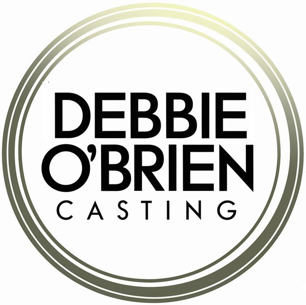

Hello all,
We are thrilled to be working on this upcoming workshop production of "OK, BOOMER!" — a new play with music that explores the trials of ageing in the modern world through the eyes of a 70-year-old.
We are casting by self-tape. Please read the important notes below on guitar requirements and accommodation before submitting.
Submit via: linktr.ee/dobcasting · Deadline: 17 April 2026
Thanks,
Dan
The original breakdown indicated that guitar proficiency was essential for every member of the cast. This has now changed. Guitar is required for some roles only — please read individual role requirements carefully.
In brief: YOUNG CAMERON, ROGER and SUMMER require strong guitar. CYNDI — guitar is an advantage but not essential. CAMERON and BARBARA — no guitar required.
Strong vocals remain important across the company.
Accommodation in Duns for the full rehearsal and performance week (Monday 4th – Saturday 9th May 2026) is to be confirmed. Further details will be provided to successful candidates.
If you are based in or near Duns, please mention this when you submit — it is helpful for us to know.
"OK, BOOMER!" is a new play with music by Mike James that explores the trials of ageing in the modern world through the eyes of a 70-year-old Scottish man.
"The tragedy of old age is not that one is old, but that one is young." — Oscar Wilde
The show serves as a celebration of the guitar and its versatility. Much of the music is played and sung live by the cast, reimagining tracks by artists ranging from David Bowie and Cyndi Lauper to Chappell Roan. Guitar proficiency is a key requirement for several roles — though not all — and is detailed under each character below.
Performance: The piece will be presented as a work-in-progress public sharing with an invited audience and industry feedback at the Duns Play Fest.
DunsPlayFest was established in 2019 as a nine-day celebration of brand-new theatre and dramatic writing, staged in the historic Borders town of Duns. Now in its 6th incarnation, it has grown to over 60 performances, workshops and talks, centred on Duns Volunteer Hall — the Heart For Duns. Featuring around 100 events including play premieres, rehearsed readings, workshops, cabaret acts, community events and parties, DunsPlayFest has gathered a reputation for quality theatre, music and wonderful atmosphere.
Retired, grouchy, but with a hidden spark. He struggles to navigate a changing world and his own ageing process.
A teacher; a younger, far more optimistic version of the older Cameron. Doubles as ensemble.
Cameron's daughter. Bubbly, energetic, bordering on annoying. She loves her father but struggles to connect with him. Doubles as ensemble.
Cyndi's husband. Friendly, long-suffering, trying to keep the peace. Doubles as ensemble.
Cameron's ex-wife. Generation X. Suspicious of anyone younger than 62 and carries a cynical edge. Doubles as ensemble.
Starbucks barista. Brightly dyed hair, tattooed, pierced. Embodies the Gen Z attitude that baffles Cameron. Doubles as ensemble. This is a strong acting role first and foremost.